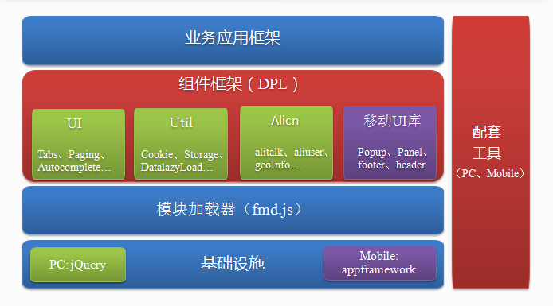

lofty-mobile 前端（无线）基础框架
简介
lofty-mobile是 1688 前端共建而成的面向移动前端的基础框架，它集加载器、DPL 实现、组件框架、配套工具为一体，为前端模块化编程及效率提升提供了强有力支持。
我们的特色
- 轻量级的 AMD 加载器，符合 AMD 标准语法规范。
- 丰富的前端通用组件，并配套 DPL 默认实现，降低业务开发成本。
- 基于 Less 的底层架构，提供组件肤色个性化定制功能，满足更多场景的需求。
- 框架层面支持全局 JS 异常监控，帮助应用将线上故障消灭于萌芽之中。
- 强大的 AMD 模块在线自动合并工具（StyleCombine 3.0）支持，摆脱线下打包烦恼，提升开发、发布效率。前端性能优化朝向自动化发展。
框架结构图
参与共建
lofty 框架来自于各业务线前端同学的共建，他的成长亦离不开大家的持续浇灌，如果你希望完善或是增加某部分功能，欢迎加入 lofty 开发者乐园，群号：1282221333 
疑问和建议
在使用 lofty 的过程中，有任何问题及建议，欢迎入群讨论，群号：151890529